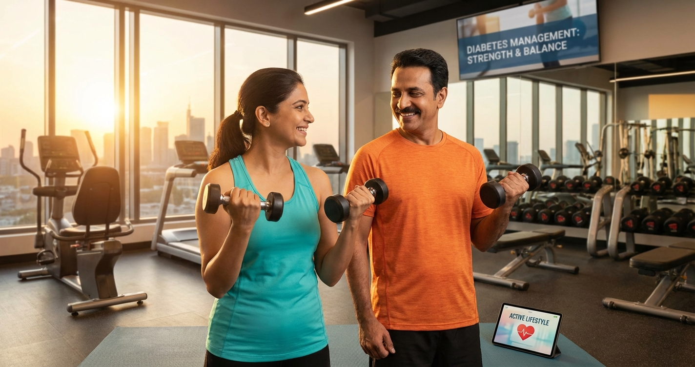

📋 Table of Contents
- Why Weight Training Is a Game-Changer for Diabetics
- The Science: How Muscles Control Blood Sugar
- 7 Proven Benefits for Indian Diabetics
- Safety First: Who Should Avoid & Precautions
- Beginner Workout Plan (4-Week Program)
- Home vs Gym: What Works in India
- 10 Best Exercises (With Instructions)
- Managing Blood Sugar Around Workouts
- Indian Diet Plan for Muscle Building + Diabetes
- 5 Common Mistakes Indian Diabetics Make
- ICMR & ADA Exercise Guidelines
- FAQs
1. Why Weight Training Is a Game-Changer for Diabetics
Most Indian diabetics think "exercise" means only morning walks. And while walking is great (we've written about post-meal walks), it's only half the picture.
Weight training — also called resistance training or strength training — is equally important, if not more so, for controlling blood sugar. Yet barely 8% of Indian diabetics include any form of resistance exercise in their routine.
Here's the reality: your muscles are your biggest glucose sponge. The more muscle you have, the more glucose your body can absorb without needing extra insulin. For Type 2 diabetics with insulin resistance, this is revolutionary.
2. The Science: How Muscles Control Blood Sugar
Understanding why weight training works helps you stay motivated. Here's the simplified science:
During Exercise
- Muscle contractions activate GLUT-4 transporters — these are glucose "doors" that open WITHOUT needing insulin
- Your muscles directly absorb glucose from your blood for energy
- This is why blood sugar often drops 30-50 mg/dL during a workout
After Exercise (The Magic Window)
- Insulin sensitivity remains elevated for 24-48 hours after a weight training session
- Your muscles continue to absorb glucose to rebuild and repair — the "afterburn" effect
- This is why training 3x per week means you're insulin-sensitive almost every day
Long Term (8-12 Weeks)
- More muscle mass = higher basal metabolic rate = more glucose used even at rest
- Reduced visceral fat (belly fat) = less insulin resistance
- Improved mitochondrial function = better cellular energy use
3. 7 Proven Benefits for Indian Diabetics
- Lower HbA1c: 0.3-0.6% reduction with regular training (equivalent to adding a medication)
- Reduce belly fat: Resistance training specifically targets visceral fat — the dangerous fat around organs that drives insulin resistance
- Better post-meal sugar: Trained muscles absorb glucose faster after meals, reducing spikes
- Stronger bones: Critical for diabetics who have 2-6x higher fracture risk (diabetes weakens bones over time)
- Heart protection: Lowers resting blood pressure by 3-5 mmHg and improves cholesterol — important since 70% of Indian diabetics also have heart disease risk
- Less medication: Many patients reduce diabetes medication doses after 3-6 months of consistent weight training (under doctor supervision)
- Mental health: Resistance training reduces anxiety and depression symptoms by 20-30% — diabetes distress is real and under-treated in India
4. Safety First: Who Should Avoid & Precautions
- Diabetic retinopathy — heavy lifting can increase eye pressure and worsen bleeding
- Uncontrolled blood pressure (above 160/100 mmHg)
- Diabetic neuropathy in feet — you may not feel injuries; use machines instead of free weights
- Recent heart event (within 6 months)
- Fasting blood sugar above 300 mg/dL — stabilize first
Essential Safety Precautions
- Always carry glucose tablets or 2-3 toffees in your gym bag
- Check blood sugar before training:
- Below 100 mg/dL → eat a small snack first (banana, 2 glucose biscuits)
- 100-250 mg/dL → safe to train ✅
- Above 250 mg/dL → skip workout, check for ketones
- Stay hydrated: Drink 200-300 ml water every 20 minutes during training
- Wear proper shoes — diabetic feet need protection from injury
- Never hold your breath during lifts (Valsalva maneuver raises blood pressure dangerously)
- Inform your gym trainer that you have diabetes
5. Beginner Workout Plan (4-Week Program)
This plan is designed specifically for Indian diabetics who have never done weight training. Start here — no gym required for the first 2 weeks.
| Week | Days/Week | Exercises | Sets × Reps | Notes |
|---|---|---|---|---|
| Week 1-2 | 2 days | Bodyweight only: wall push-ups, chair squats, standing calf raises, wall planks | 2 × 10 | Focus on form. Rest 60-90 sec between sets |
| Week 3 | 3 days | Add resistance bands or 1-2 kg dumbbells | 2 × 12 | Add: bicep curls, shoulder press, band rows |
| Week 4 | 3 days | Progress to 2-3 kg dumbbells | 3 × 12 | Add: lunges, dumbbell deadlifts, chest press |
6. Home vs Gym: What Works in India
Home Workout Setup (₹1,000-3,000)
- Resistance bands set: ₹300-600 on Amazon India — versatile and travel-friendly
- Adjustable dumbbells (2-10 kg): ₹1,000-2,500 — best investment for home training
- Yoga mat: ₹300-500 — for floor exercises
- Water bottles (1-2L): Free! — great makeshift weights for absolute beginners
Gym Membership (₹500-3,000/month)
- Advantages: More equipment variety, trainer guidance, social motivation
- Best for: Those who need accountability and want to progress to heavier weights
- Look for: Gyms with air conditioning (important — heat raises blood sugar) and clean drinking water
- Tip: Many gyms in India now offer ₹500-800/month in tier-2 cities — very affordable
7. 10 Best Exercises (With Instructions)
1. Chair Squats (Legs + Glutes)
How: Stand in front of a chair, feet shoulder-width apart. Lower your body as if sitting down — lightly touch the chair, then stand back up. Don't plop down.
Why for diabetics: Legs have the largest muscles in your body. Working them uses the most glucose per rep. Squats alone can drop blood sugar by 20-30 mg/dL.
Sets/Reps: 3 × 12-15. Progress: hold dumbbells or remove the chair.
2. Wall Push-ups → Regular Push-ups
How: Start with wall push-ups (stand arm's length from wall, push against it). Progress to knee push-ups, then full push-ups over 4-6 weeks.
Sets/Reps: 3 × 10-12. Most Indians can progress to knee push-ups within 2 weeks.
3. Dumbbell Rows (Back + Biceps)
How: Place left hand on chair, right foot back. Hold dumbbell in right hand, pull it up toward your hip like starting a lawnmower. Squeeze shoulder blade. Lower slowly.
Sets/Reps: 3 × 10 each side. Start with 2 kg, progress to 5 kg over weeks.
4. Shoulder Press (Shoulders + Triceps)
How: Sit on chair with back straight. Hold dumbbells at shoulder height, press up overhead until arms are straight (don't lock elbows), lower slowly.
Sets/Reps: 3 × 10-12. Start with 1-2 kg. Don't hold breath!
5. Lunges (Legs + Balance)
How: Step forward with right foot, lower body until both knees are at 90°. Push back to starting position. Alternate legs. Hold wall for balance if needed.
Why for diabetics: Lunges work each leg independently, improving balance (important for neuropathy patients). Uses large leg muscles for major glucose uptake.
Sets/Reps: 3 × 10 each leg. Add dumbbells when bodyweight feels easy.
6. Bicep Curls (Arms)
How: Stand with dumbbells at sides, palms facing forward. Curl weights up to shoulders without swinging. Lower slowly (3 seconds down).
Sets/Reps: 3 × 12. Start with 2 kg. The slow lowering phase (eccentric) is where most glucose gets used.
7. Plank (Core)
How: Forearms on ground, body in a straight line from head to heels. Hold position. Start against a wall (easier), progress to knees, then full plank.
Why for diabetics: Strong core reduces back pain (common in diabetics), improves posture, and builds deep abdominal muscles that help reduce visceral fat.
Duration: 3 × 20-30 seconds. Build to 60 seconds over 4 weeks.
8. Calf Raises (Lower Legs)
How: Stand on edge of step (hold railing for balance). Rise up on toes, hold 2 seconds, lower slowly below step level for a stretch.
Why for diabetics: Improves circulation in feet and lower legs — critical for diabetics at risk of peripheral artery disease and foot complications.
Sets/Reps: 3 × 15-20. Can be done while brushing teeth!
9. Resistance Band Pull-Apart (Upper Back + Posture)
How: Hold band at chest height with both hands, arms straight. Pull band apart by squeezing shoulder blades together. Return slowly.
Sets/Reps: 3 × 15. Use light band. Fixes "desk posture" and prevents shoulder injuries.
10. Dumbbell Deadlift (Full Body)
How: Stand with dumbbells at thighs, feet hip-width apart. Hinge at hips (push hips back), lower dumbbells along legs until mid-shin, then drive hips forward to stand. Keep back flat throughout.
Why for diabetics: Works the most muscles simultaneously = maximum glucose uptake per rep. The #1 "bang for your buck" exercise.
Sets/Reps: 3 × 10. Start with 3-5 kg dumbbells. Focus on hip hinge, NOT rounding the back.
8. Managing Blood Sugar Around Workouts
| Timing | Blood Sugar Level | Action |
|---|---|---|
| Before Workout | Below 100 mg/dL | Eat 15-20g carbs (banana, 2 glucose biscuits, small roti) |
| 100-180 mg/dL | ✅ Ideal range — start training | |
| 180-250 mg/dL | Can train — exercise will help bring it down | |
| Above 250 mg/dL | 🚫 Skip workout. Check ketones. Consult doctor if persistent | |
| During Workout | Feeling shaky/dizzy | STOP. Check sugar. Consume 15g fast carbs (glucose tablet, juice) |
| After Workout | Within 30 minutes | Eat protein + carb meal (paneer + roti, egg + brown rice, dal + rice) |
9. Indian Diet Plan for Muscle Building + Diabetes
🍽️ Training Day Meal Plan
You need adequate protein (1.2-1.6 g/kg body weight) to build muscle while keeping blood sugar stable. Here's a sample Indian diet:
Breakfast (8 AM): 2 moong dal cheela + mint chutney + 1 boiled egg (or paneer) + green tea
~25g protein, low GI
Mid-morning snack (11 AM): Handful of roasted chana + 10 almonds
~10g protein
Lunch (1 PM): 2 multigrain roti + dal (any) + sabzi + raita + salad
~20g protein
Pre-workout (3:30 PM): 1 banana + 5 soaked almonds
Quick energy + sustained release
Post-workout (5:30 PM): Paneer bhurji (100g paneer) with 1 roti OR 2 boiled eggs + brown bread
~25g protein — critical recovery meal
Dinner (8 PM): Grilled fish/chicken (150g) OR tofu + 1 roti + palak sabzi
~30g protein
Before bed (10 PM): 1 glass warm turmeric milk (low-fat)
Anti-inflammatory + muscle recovery
Daily total: ~110-120g protein (for a 75 kg person)
10. 5 Common Mistakes Indian Diabetics Make
- Skipping meals before training. Some diabetics fast before exercise thinking it'll "burn more fat." This is dangerous — hypoglycemia during weight training can cause fainting with heavy weights. Always eat 1-2 hours before.
- Doing only cardio. Walking 10,000 steps is great, but without resistance training you lose muscle mass every year after age 30. Muscle loss worsens insulin resistance. You need BOTH.
- "Too old to lift." Research shows people in their 60s and 70s gain significant muscle and blood sugar benefits from weight training. Start with bodyweight exercises — age is not a barrier.
- Ignoring protein. Indian vegetarian diets often provide only 40-50g protein/day (the body needs 70-100g+). Without adequate protein, weight training can't build muscle. Add paneer, dal, soy chunks, or eggs to every meal.
- Going too heavy too fast. Ego lifting leads to injuries, especially for diabetics with neuropathy who may not feel pain signals properly. Start with weights you can lift 15 times comfortably. Progress by 10% per week maximum.
11. ICMR & ADA Exercise Guidelines
- ICMR (Indian Council of Medical Research): At least 150 minutes/week of moderate aerobic activity PLUS muscle-strengthening activities on 2+ days/week
- ADA (American Diabetes Association): 2-3 sessions/week of resistance training (8-10 exercises, 1-3 sets of 10-15 reps) with no more than 2 consecutive days without exercise
- WHO (2026): Adults with chronic conditions including diabetes should do muscle-strengthening activities involving all major muscle groups 2+ days per week
The bottom line: every major health body in the world recommends weight training for diabetics. It's not optional — it's as important as your medication.
12. Frequently Asked Questions
Can Type 1 diabetics do weight training?
Yes! Type 1 diabetics benefit greatly from weight training. However, blood sugar management requires extra care — you may need to reduce insulin doses on training days. Always work with your endocrinologist to adjust your insulin regimen. Keep fast-acting carbs and a glucagon kit accessible.
Will weight training make my blood sugar go UP?
Intense weight training (very heavy, high-effort sets) can temporarily raise blood sugar due to adrenaline and cortisol release. This spike is normal and temporary (30-60 minutes). Moderate-intensity training (which is what this guide recommends) typically lowers blood sugar during and after the session.
I have knee pain — can I still do weight training?
Yes, with modifications. Avoid deep squats and lunges. Use machines (leg press, seated rows) which are easier on joints. Upper body exercises (curls, presses, rows) don't involve knees at all. Resistance bands are also very joint-friendly. Consult a physiotherapist for specific modifications.
How soon will I see blood sugar improvements?
You'll see acute effects immediately — blood sugar drops within a single session. For lasting improvements (lower fasting sugar, reduced HbA1c), give it 8-12 weeks of consistent training (3x/week). Most studies show significant HbA1c reduction at the 12-week mark.
Can I do weight training during Ramadan/fasting?
Training during religious fasts requires extra caution. Best approach: train 30-60 minutes before Iftar (breaking fast) so you can eat immediately after. Use lighter weights and lower volume. Skip training if blood sugar is below 100 mg/dL during the fast. Stay hydrated during non-fasting hours. Always consult your doctor about medication timing during fasting periods.
🏋️ Ready to Start Your Weight Training Journey?
Track your blood sugar before and after workouts with our free diabetes management tools. See the difference weight training makes in real data.
Get Started Free →